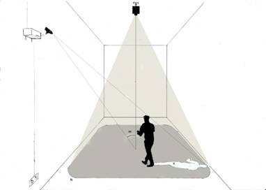
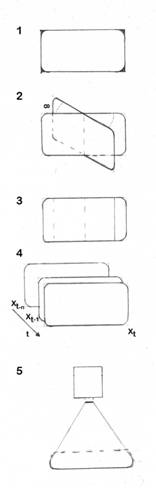

Damià Vives i Joan Llobera
Ombres
de llum. 2011
Instal·lació. Mides
variables.
Aquest projecte tradueix a l’entorn expositiu els elements
d’un experiment de realitat virtual. En aquest camp de recerca s’empren
sensors, projectors i certes relacions de perspectiva entre ells per provocar
reaccions reals a partir d'estímuls audiovisuals generats, en última instància,
per l'activitat dels propis participants.
Per exemple, si emprem un casc de realitat virtual, en mirar
el nostre cos podem veure’l reemplaçat per un cos virtual que es mou igual que
nosaltres però té una aparença diferent. Aquestes eines permeten estudiar les
bases neurals de la representació corporal.
Per
tal de traduir aquesta idea als materials propis d’una exposició, hem decidit
jugar amb les ombres, una part del “cos” que podem representar senzillament. Hem substituit
els sensors per una càmera web i el casc de realitat virtual per un projector.
Això ens permet mostrar de forma estilitzada els elements
d’un experiment. Primer, estímuls que reaccionen a l’espectador i que el
representen d’una forma alterada. Segon, mesures objectives de l’efecte que
produeix aquesta representació.
Si es tractàs d’un experiment, hauríem de demostrar que el
participant “s’apropia” de l’ombra virtual: quantificaríem estadísticament els
canvis comportamentals provocats per la visió de la pròpia ombra distorsionada
a partir de la informació de la càmera web i ho relacionaríem amb qüestionaris
o una entrevista post experimental. Com que es tracta d’un treball artístic,
mostrem un testimoni de la “vida” de la instal·lació: l’espectador pot veure un
registre de l’activitat capturada cada dia de l’exposició.
L’esquema de processat consisteix en:

1) Capturar la imatge des de la
posició de la web cam, i fer una màscara per a recollir només els canvis en la
zona de projecció que s’emprarà.
2) Rotar la imatge en un angle
equivalent a l’angle entre la web cam i el projector. Això permet projectar des
del projector la imatge com es veuria des del punt de vista de la web cam.
3) Per a cada píxel, restar el
valor present del valor passat. Això dóna un valor del moviment vist des de la
perspectiva de la web cam. Aquest pas permet capturar el moviment de l’escena,
i a més cancel·larà l’efecte que pugui tenir el context (canvis de llum, etc.).
4) En els llocs on no hi ha
canvis es posa el valor negre. On es detecten canvis per primer cop es projecta
un color determinat; en els que es detecta per segon cop es torna a posar el
valor negre. Això fa que en el punt cec de la web cam -és a dir, el que
correspondria a l’ombra del personatge des del punt de vista de la web cam-
acabi pintada, gràcies al moviment del participant, d'un color arbitrari.
5) Si es desitja, es poden afegir textures en
funció d’altres paràmetres del moviment. Aquí el criteri és únicament estètic.